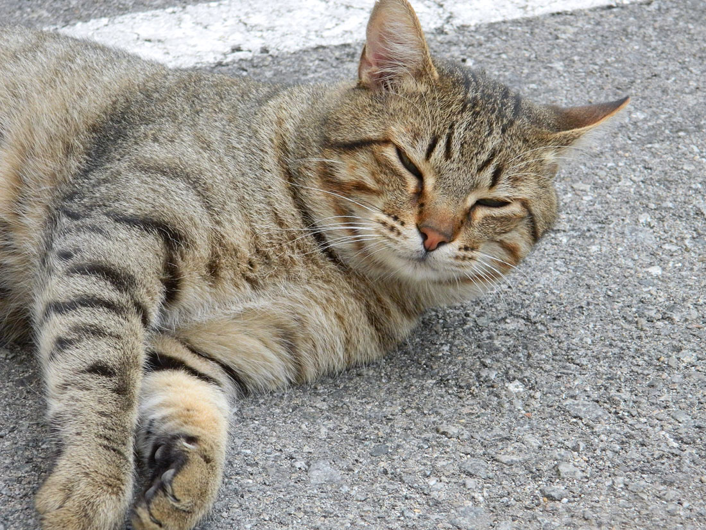
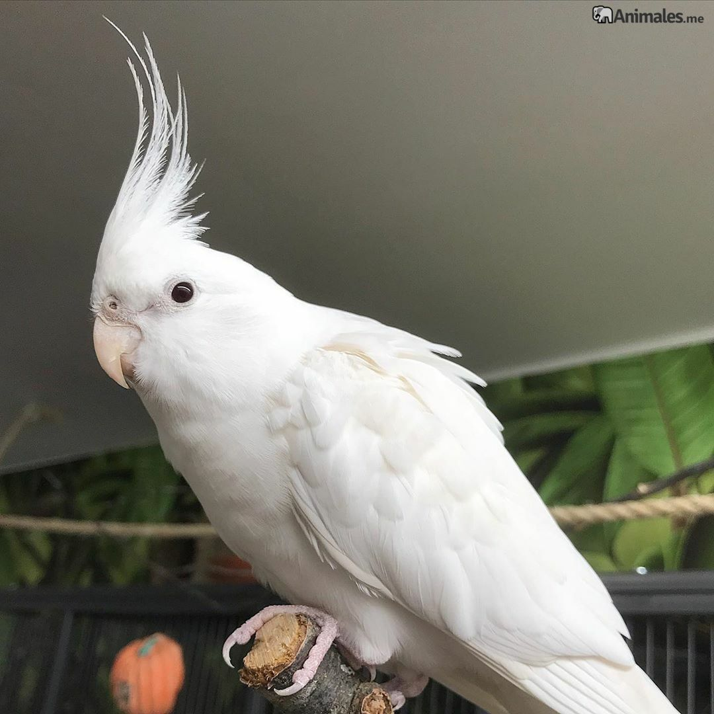

La historia de Lala
Lala, una gata europea de pelaje gris atigrado, fue rescatada de las calles por la perrera municipal después de semanas de sobrevivir sola. Al llegar al refugio, mostró su lado más dulce y cariñoso, ganándose el corazón de todos. Un día, Sofía la conoció y, en cuanto Lala comenzó a ronronear en sus brazos, supo que habían nacido para ser compañeras. Ahora, Lala disfruta de una vida feliz en su nuevo hogar, rodeada de amor y seguridad.
La historia de Luna

Luna, una pequeña ninfa albina de plumas blancas y ojos rosados, fue encontrada en un parque, desorientada y asustada.
La perrera local la rescató, y aunque al principio era tímida, pronto comenzó a cantar suavemente, como si agradeciera
estar a salvo. Cuando Ana la conoció en el refugio, se enamoró de su canto y su delicadeza. Luna se subió a su dedo,
confiada, y en ese momento Ana supo que había encontrado una compañera especial. Ahora, Luna vive feliz en su hogar,
acompañando cada día con sus dulces melodías.
Nuestra misión es rescatar animales en situación de vulnerabilidad y brindarles una segunda oportunidad para encontrar un hogar lleno de amor y cuidado. Creemos que cada mascota merece una vida digna, rodeada de cariño y estabilidad, por lo que trabajamos incansablemente para asegurar que cada uno de ellos encuentre una familia que valore y respete su vida. Nos dedicamos no solo a su rescate y rehabilitación, sino también a crear conexiones significativas entre las mascotas y las personas que desean brindarles un nuevo comienzo.